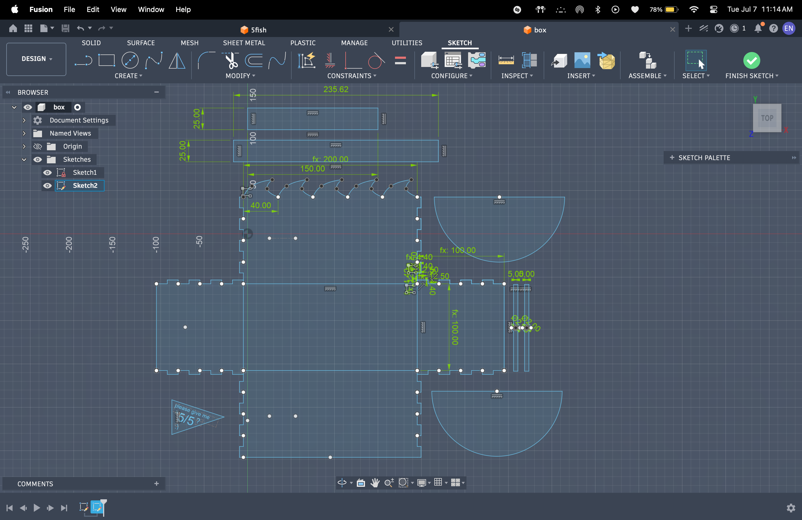
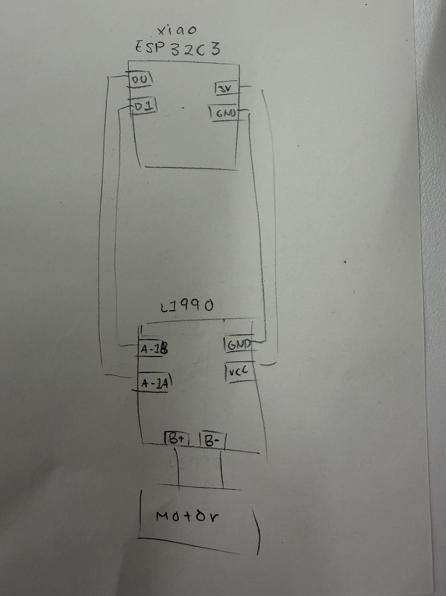
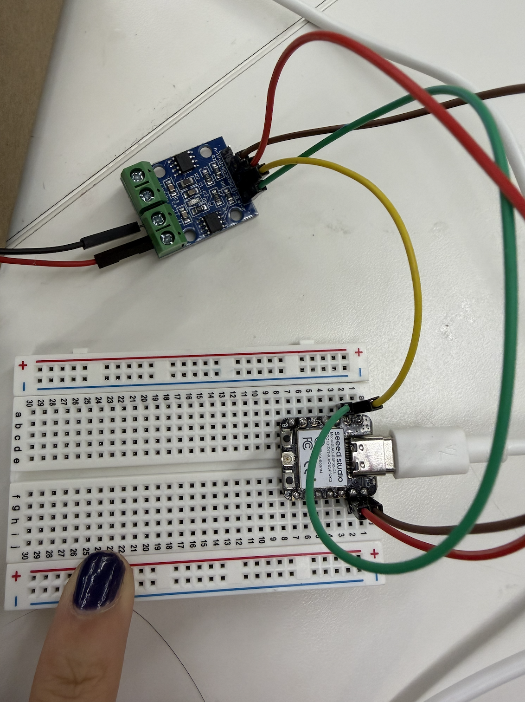

Last week, I wasn't super satisfied with my kinetic sculpture because the motor would spin too fast, and because I hadn't learned how to program the Arduinos, my group didn't know how to slow it down. So, this week, after learning during Lab about Arduinos, I wanted to create something that would change the speed while it was running. I wanted to create a boat that would look like it was rocking up and down in the tides, where the motor would spin faster and slower to emulate the tides. My first step was to create everyting in Fusion. I created a box with waves to house the motor, uneven wheels that would create the up and down effect, stabilizers that would keep the boat from falling over, and of course, the boat itself.

After, I wired together the microcontroller and attatched it to the motor. I used the class example, which was a very simple circuit that would turn on when it was plugged into my computer. However, the more complicated part (because I've literally never coded before) would come when I changed the speed in Arudino IDE.


Here is the link to my raw code.
Once I was done with the code, and making sure the motor actually spun at different speeds, I attatched the motor to the rest of my project.
However, it was extremely unsteady due to the supports holding the boat up not being straight and because I had not fully closed the box. Also, I noticed that the boat would keep falling forward and making the motion look sloppy and uneven. To fix these issues, I reglued the supports to the boat and added oars to the front of the box to stop the boat from falling over while it was running.
In the end, this was the final product!
We want to make a spinning top.